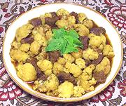

|
Lamb & Cauliflower StewAfghanistan - Qorma-e-Gul-e-Karam | ||||
| Serves: Effort: Sched: DoAhead: |
3 main ** 1-1/3 hrs Most |
A stew popular in Afghanistan during the winter months. While Lamb is specified, Beef can be used, and costs a lot less. The photo example was made with beef, because that's what I had on hand. | |||
|
10 1-1/4 5 1 6 1 1 2 2 1/4 1/2 1/4 2 |
oz # oz cl oz t t t T t t t c |
Lamb Meat (1) Cauliflower (2) Onion Garlic Tomato Coriander Seed Cumin Seed Toor Dal (3) Oil for frying Turmeric Salt Pepper Water |
Prep - (12 min)
|